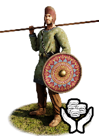
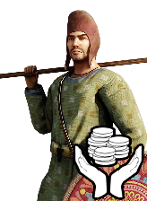

RTR: Imperium Surrectum
RTR: Imperium SurrectumMercenary Cappadocian Levy Spearmen


Mercenary. Hired from a regional pool, not recruited from a building.
Class: spearmen · Category: infantry · Men per unit: 60
Description
As one of their neighbours might have observed: "The Cappadocians are a people obedient to their kings and accustomed to serve, for the mass of the population are bound to their soil and the local lords."
Unlike the citizen-hoplites of Greek poleis who take up arms for their native city-state, these Cappadocian Levy Spearmen are rural peasants and serfs forced into battle under obligation to local rulers, satraps, and kings. Drawn from the agricultural population of the Anatolian interior, these spearmen possess neither the discipline of Greek armies nor their expensive heavy panoplies. Instead, they serve because they have no choice, being deployed in massed ranks to hold the central battleline, absorb the initial shock of the enemy charge, and pin them to their position while the better armed Cappadocian cavalry carries out its flanking manoeuvres. In terms of equipment, these men carry long thrusting spears, as well as daggers or axes as sidearms. For defence, they wield flat wooden shields, beautifully decorated with local motifs and art. Cappadocian Levy Spearmen wear local tunics, native felt caps, and simple leather footwear, entirely lacking body armour. With little motivation to fight, and being vulnerable in prolonged melees against heavier infantry units or when enduring cavalry attacks on their flanks, these reluctant conscripts can easily break under pressure. Even so, their sheer numbers make them an indispensable unit in any Cappadocian army.
Historical background
Unlike Western Asia Minor, where Greek colonisation established autonomous city-states, the interior of Cappadocia remained a landscape dominated by vast royal estates, noble satrapal fiefs, and massive temple-states such as Comana and Venasa. The population inhabiting these lands consisted primarily of peasantry bound to the soil and hierodouloi (temple-serfs) (Strabo, Geography 12.2.3, 12.3.34; Weiskopf, "CAPPADOCIA", in: Encyclopaedia Iranica IV [1990]). When war threatened the region, local rulers raised armies through a system of feudal obligation and forced conscription administered by local estate holders and village headmen.
During the Wars of the Diadochi (322-272 BC), Macedonian generals such as Eumenes of Cardia quickly understood that while native Cappadocians could not function as Macedonian phalangites without extensive training, their sheer numbers were vital for bolstering the army’s strength. Indeed, as Diodorus tells us: "Eumenes, with the forces that had been given him, went to the Hellespont; and there, having already prepared a large body of cavalry from his own satrapy, he marshalled his army, which had previously been deficient in that branch". With this force, Eumenes’ army grew to "no less than twenty thousand infantry and five thousand cavalry" (Diodorus Siculus, 18.29.1-3; Anson, Eumenes of Cardia: A Greek Among Macedonians [2015]). Eumenes mobilised thousands of local Anatolian spearmen by imposing mandatory quotas on fortified rural villages (komai) (Cohen, The Hellenistic Settlements in Europe, the Islands, and Asia Minor (1995), pp. 43-44). These conscripts provided Eumenes with the critical mass needed to reinforce his battle lines against opposing armies composed of veteran Macedonian infantry.
This reliance upon forced rural levies persisted under the Ariarathid dynasty and well into the 1st century BC. During the Mithridatic Wars, as Cappadocia was repeatedly invaded by Pontic and Roman forces, both King Ariarathes and the Pontic garrisons pressed the local peasantry into service to repair fortresses and increase the size of their respective armies. Indeed, Lucius Lucullus, “who had been chosen consul and general for this war”, was in Cyzicus when he “learned from deserters that the king's army contained about 300,000 men” (Appian, Mithridatic Wars 15; Plutarch, Sulla 11.4).
Stats
| Rank in roster | Rank in roster | Rank in roster | Rank in roster | ||||||||
|---|---|---|---|---|---|---|---|---|---|---|---|
| Men per unit | 60 | █████████· 88% | Attack | 5 | █········· 0% | Charge bonus | 3 | ██········ 16% | Defence | 26 | ███······· 33% |
| · armour | 2 | █········· 13% | · defence skill | 22 | ██████···· 60% | · shield | 2 | ███······· 26% | Morale | 7 | █········· 11% |
| Discipline | Impetuous (may charge without orders) | Training | Untrained | Recruitment cost | 2,229 dn | ██████···· 58% | Upkeep per turn | 544 dn | ███······· 25% | ||
| Turns to recruit | 2 |
Weapons
| Primary | Secondary | Primary | Secondary | Primary | Secondary | Primary | Secondary | ||||
|---|---|---|---|---|---|---|---|---|---|---|---|
| Attack | 5 | — | Charge bonus | 3 | — | Type | melee · blade | — | Damage | piercing | — |
| Properties | Light spear (braced against cavalry charges from the front) · +8 attack against cavalry | — |
Defence
| Primary | Secondary | Primary | Secondary | Primary | Secondary | Primary | Secondary | ||||
|---|---|---|---|---|---|---|---|---|---|---|---|
| Total | 26 | — | Armour | 2 | — | Defence skill | 22 | — | Shield | 2 | — |
Condition and terrain
| Hit points | 1 | Ground: scrub / sand / forest / snow | -2 / 0 / -4 / 0 | Charge distance | 30 | Formations | Square |
Technical stats
| Time between blows (primary / secondary) | 2.5 s / — | Extra fatigue in hot climates | 0 | Collision mass per man (1.0 is normal) | 0.84 | Spacing between men: close / loose | 1 × 1.2 m / 2 × 2.4 m |
| Default ranks | 5 |
In battle: Very good stamina
Where to hire it
No mercenary pool on the campaign map offers this unit, so it cannot be hired.